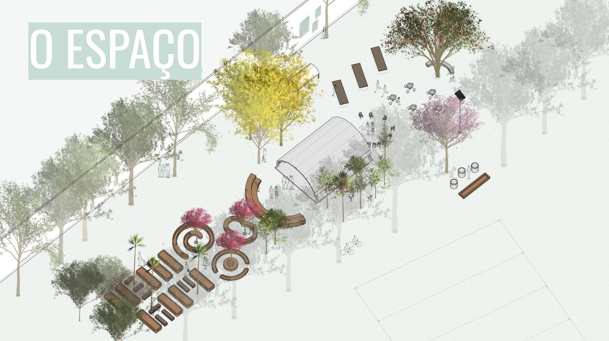
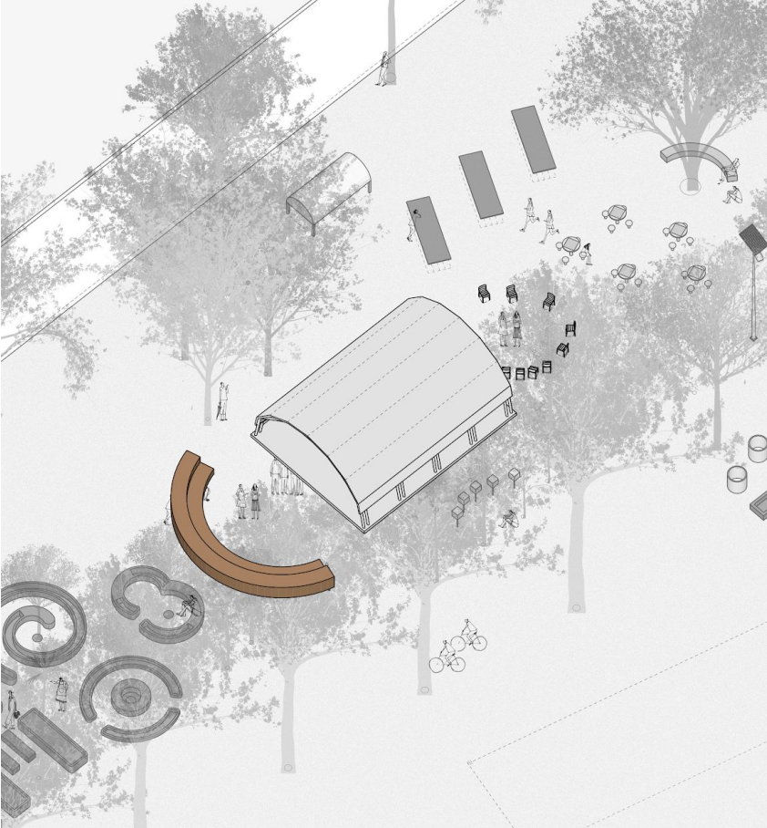
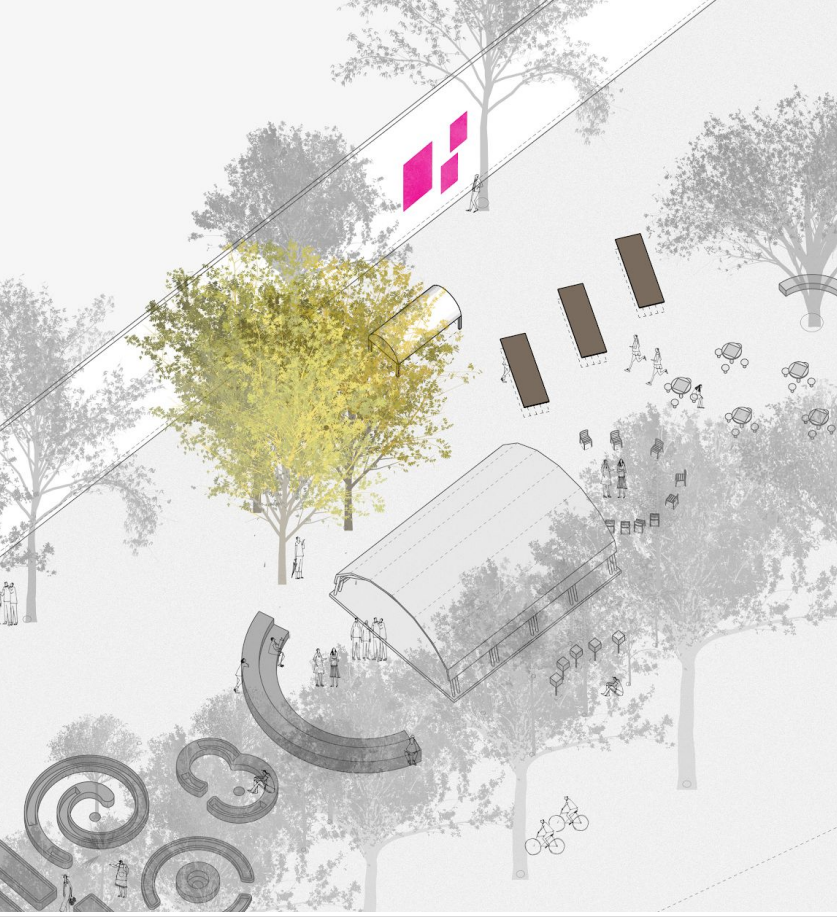
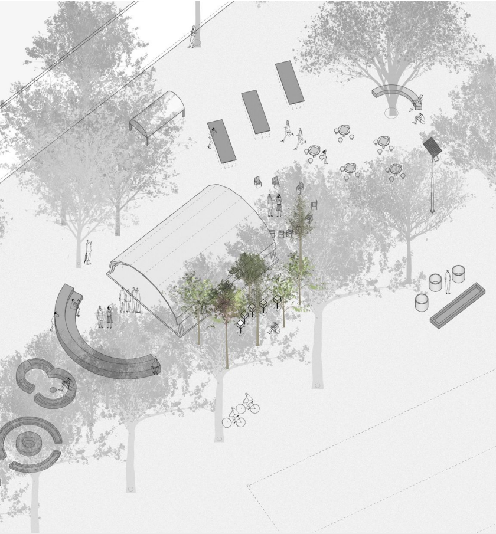
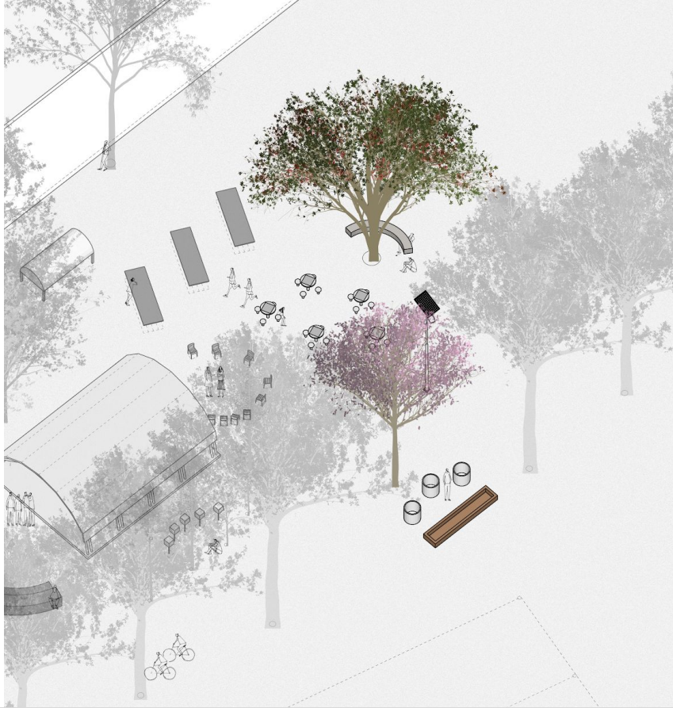

O Projeto
A proposta é a construção de um espaço, utilizando materiais e tecnologias sustentáveis. O espaço poderá ser tanto um laboratório e sala de aula - se relacionando com o currículo das disciplinas regulares - quanto servir à comunidade para atividades de lazer e festividade - feiras,festas, apresentações e outras atividades. Para que o espaço seja educadorsustentável, é necessário que suaconstrução e gestão seja feita de forma participativa. A ideia central do projeto consiste na criação de um espaço educador sustentável que se estruture em dois pilares: o convívio educador e o ciclo da vida.
Circuito: Conviver
O convívio perpassa e está presente em todas as etapas da vida. Para representar essa ideia será construída a sala verde e a arquibancada, ambos espaços centralizados e conectados a todos os outros.
Circuito: Primavera
Nessa área estão previstas atividades relacionadas ao nascer da vida, pelas sementeiras e viveiro de mudas, e, também, ao nascer de novas ideias, pelas atividades manuais e artísticas - como oficinas de marcenaria, pintura, escultura etc.
Circuito: Verão
Nessa área estão previstas atividades relacionadas ao nascer da vida, pelas sementeiras e viveiro de mudas, e, também, ao nascer de novas ideias, pelas atividades manuais e artísticas - como oficinas de marcenaria, pintura, escultura etc.

Circuito: Outono
Espaço com a presença de abelhas nativas e árvores frutíferas, representando a reprodução da vida e a disseminação do conhecimento através da observação e contemplação da natureza.
Circuito: Inverno
Área composta pelos sistemas de compostagem e reaproveitamento de água e resíduos, demonstrando que o fim do ciclo da vida é apenas uma etapa que possibilita sua renovação e é indispensável ao equilíbrio do sistema.
